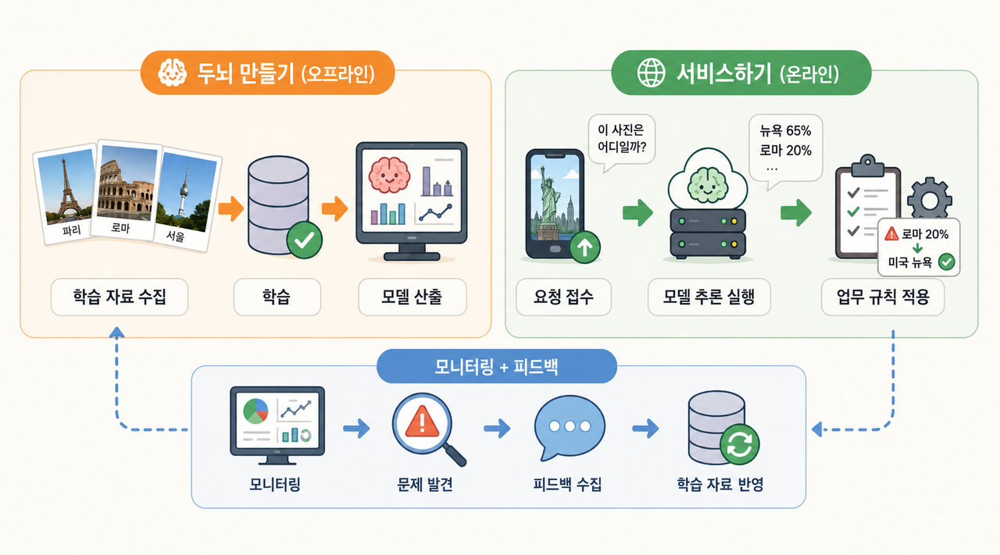

예를 들어 여러분이 세계 여러 도시를 다니며 사진을 많이 찍어서 사진을 보고 어떤 도시인지 맞히는 AI를 만든다고 생각해보자. 에펠탑이나 자유의 여신상을 보고 도시를 쉽게 맞힐 수 있을 거 같은데 그런 랜드마크가 없이 간판의 글자, 건물 모양, 도로와 자동차, 심지어 날씨와 옷차림까지 단서로 맞힐 수 있을까? 이 글에서는 개발을 모르더라도 이런 AI 시스템을 어떻게 구성하고 내부에서 어떤 일이 일어나는지 설명해보려고 한다.
시스템 안에는 크게 세 개의 흐름이 있다. 사진과 정답을 모아 두뇌(모델)를 만드는 학습 흐름, 완성된 두뇌로 실제 사용자의 사진에 답하는 서비스 흐름, 그리고 이 둘을 이어주는 모니터링+피드백 흐름이다. 서비스하면서 나온 결과를 모니터링하다가 문제를 발견하면 다시 정답을 달고 그 정답이 다시 학습 흐름의 재료가 되어 두뇌를 더 똑똑하게 만든다.
아래 그림에서 세 흐름이 어떤 단계로 진행되고 어떻게 맞물리는지 보자.

1. 두뇌 만들기: 학습을 통해 머리 좋은 AI 만들기
AI 학습은 컴퓨터에게 다양한 도시별 사진을 보여주는 과정이다. 사람은 도시를 구분할 때 그 도시의 랜드마크를 위주로 기억하는 경우가 많다. AI에게도 그런 랜드마크를 보여주면 랜드마크를 통해 도시를 구분하는 방법을 배우게 된다. 한편 도시 특유의 분위기가 있을 수도 있다. 간판의 언어라든가 건물 스타일, 사람들의 복장, 거리 풍경 등. 이런 것들도 AI에게 보여주면 학습이 된다.
그래서 두뇌 만들기의 주요 과정은 학습 자료가 되는 사진을 수집하고 사진별로 어떤 도시인지 정답을 붙여 "학습용 데이터셋"을 만드는 것이다. 이 사진은 서울, 이 사진은 로마, 이 사진은 시드니와 같이 수백, 수천 장의 사진과 정답을 매핑하고 사진과 정답 파일을 모아 컴퓨터에게 주는 것이다. 이 과정을 "라벨링"이라고 하며 학습 자체는 다양한 알고리듬을 활용한 프로그램이 수행한다.
말은 간단한데 실제로 해보면 손이 많이 간다. 이 때문에 ChatGPT 같은 외부 AI를 활용해 1차 분류 작업을 하기도 한다.
여행 사진을 수천 장 모아도 그중 상당수는 음식, 인물, 자연 풍경처럼 애초에 도시와 무관한 사진이라 먼저 걸러내는 것부터가 일이다. 또한 골목길이나 오래된 성당처럼 여러 도시에 비슷하게 있는 풍경이면 사람도 사진만 보고는 확신하기 어렵다. 이럴 때 사람은 사진을 찍은 날짜나 위치 정보(EXIF)를 참고해서 정답을 달 수 있지만 정작 서비스에 올라오는 사진에는 그런 정보가 없거나 믿을 수 없는 경우가 많다. 그래서 이런 사진은 학습 자료에서 아예 빼거나 별도 검토 대상으로 돌려서 판단하기 어려운 경우에 대한 대처가 필요하다.
학습 코드를 짜는 것 자체는 요즘 AI 덕분에 빨라졌다. 하지만 그 코드를 서버에 올리고 실제로 학습을 돌리는 데는 여전히 시간이 걸린다. 수천 장의 사진을 GPU가 있는 서버로 옮기고 학습이 끝날 때까지 한참을 기다려야 하니 코딩 속도가 빨라진 만큼 전체 작업이 빨라지는 건 아니다.
모든 사진을 학습에 사용해서도 안 된다. 일부는 모델이 학습하는 데 사용하고 일부는 시험 문제로 남겨서 모델이 만들어진 후 평가하는 데 사용한다. 학습에 쓰지 않은 사진까지 잘 맞혀야 새로운 사진도 제대로 인식한다고 볼 수 있기 때문이다.
모델 평가는 학습 자료, 학습 방법 등에 따라 다양하게 결과가 나오기 때문에 모델을 바로 서비스에 사용하는 게 아니라 평가한 성능에 따라 베타 모델, 정식 모델 식으로 나누고 계속 테스트하여 테스트를 통과한 정식 모델을 서비스로 넘기게 된다.
2. 서비스하기: 사용자가 AI를 사용하도록 제공하기
서비스 모델로 확정된 정식 모델이 있으면 이제 시스템에 배치하여 실제 사용할 수 있는 환경으로 서비스를 제공한다. 예를 들어 사용자가 앱에 에펠탑 사진을 올리고 답을 받는 과정이 가능하게 된 것이다.
이 과정에서 AI 모델을 사용자와 연결시켜 주려면 접수 창구 역할을 하는 서비스(앱)이 있어야 하고 사진을 받아 기본적인 검증과 전처리를 수행한 후 모델에게 전달하게 된다. 마치 공공기관에 서류를 제출하면 담당자가 서류를 확인하고 접수하는 것과 비슷하다.
이제 모델은 사진을 보고 답을 내는데 창구는 모델의 답을 그대로 사용자에게 전달하지 않는다. 여기에 업무 규칙을 얹어서 최종 답을 만든다. 예를 들어 확률이 충분히 높으면 바로 "파리네요!"라고 알려주고 사진 자체가 너무 흐릿하거나 특정 도시로 확정할 수 있는 답이 없으면 "다시 찍어주세요"라고 요청할 수 있다.
파리라는 답도 필요에 따라 다양한 형태로 사용자에게 전달할 수 있다. 예를 들어:
- "파리일 확률 92%, 로마일 확률 5%"처럼 다른 가능성도 제시한다.
- 사진 안에서 어떤 요소가 판단에 중요한 단서였는지 알려준다.
- 학습한 자료 중 비슷한 사진을 찾아 보여준다.
사용자는 답을 받아 끝이더라도 시스템은 그대로 끝나지 않는다. 다음 흐름인 모니터링+피드백을 통해 계속된다.
3. 모니터링+피드백: 두뇌를 더 똑똑하게 만들기
이 흐름은 AI의 답변 결과를 계속 확인해서 얼마나 정답을 잘 맞히는지 확인하고 학습 자료를 보완하거나 학습 방법을 개선하는 과정이다.
모델이 학습할 때 봤던 사진과 사용자가 실제로 올리는 사진은 차이가 많다. 계절이 바뀌고, 사람들이 쓰는 카메라가 바뀌고, 여행지의 모습도 바뀔 수 있기 때문에 학습 때와 성격이 다른 사진이 들어온다. 모델은 그대로인데 현실이 변화할 수도 있는 것이다.
따라서 문제로 보이는 사례를 사람이 확인해서 정답을 다시 맞춰주는 과정이 필요하다. 예를 들어 모델이 "로마 확률 80%"라고 답한 사진이 사실은 미국 뉴욕이었다면 이걸 찾아내고 답을 다시 붙이는 작업이 필요하다. 이 확인 과정이 두뇌 만들기의 "학습 자료 수집"과 이어지는 지점이다.
즉, 사진과 정답을 다시 저장소에 쌓아 다음 학습의 재료로 만드는 것이다. 서비스 흐름에서 나온 경험이 학습 흐름으로 돌아가면서 세 흐름이 하나의 순환 구조를 이룬다.
부록 1: 개발자를 위한 관련 도구
독자가 개발자인 경우 혹시 "실제 개발에서는 뭘 쓰는데?"가 궁금할까봐 정리해본다.
| 구성요소 | 역할 및 설명 |
|---|---|
image-validation-service |
직접 개발이 필요한 접수 창구. 입력 검증과 전처리, 모델 호출, 업무 규칙 적용, 이력 저장 담당. |
| Kubeflow Pipelines | 데이터 준비, 학습, 평가 작업을 정해진 순서로 실행해주는 관리자 |
| KServe | 승인된 모델을 실제 서비스가 부를 수 있는 형태로 배치해주는 서빙 계층 |
| MLflow | 모델의 학습 정보를 기록하고 베타/정식(실제로는 candidate/champion) 상태 관리 |
| 공유 스토리지 | 원본 사진, 정답, 데이터셋, 모델 산출물을 함께 보관하는 저장 공간 |
| Container Registry | 추론 서비스와 학습 작업을 실행할 컨테이너 이미지(가상 머신 바이너리)를 보관하는 곳 |
| Prometheus/Grafana | 요청량, 응답 시간, 오류, 답변 분포 등 운영 상태를 지켜보는 관제실 |
service-console |
직접 개발이 필요한 관리 기능: 학습 데이터 검토, 학습 실행, 모델 승인 등 전체 흐름 관리 |
이 도구들을 다 그대로 써야 하는 건 아니다. 작은 프로젝트라면 일부는 간단한 배치 작업이나 저장소로 대신할 수 있다.
부록 2: 이미지 학습 도구
"두뇌 만들기"에서 다양한 알고리듬의 학습 프로그램이 있다고 언급했는데 아래와 같은 관련 도구들이 있다.
| 구성요소 | 역할 및 설명 |
|---|---|
| PyTorch / torchvision | 학습 코드를 작성하고 실행하는 대표적인 프로그래밍 라이브러리 |
| EfficientNet | 사진에서 특징을 뽑아내는 모델 구조(아키텍처) 자체 |
| ImageNet 사전학습 가중치 | 수백만 장의 일반 사진을 미리 학습한 “기초 지식”. 도시 사진 같은 특정 주제를 학습하기 위한 기반으로 사용. |
| Albumentations 같은 증강 라이브러리 | 사진을 돌리거나 밝기를 바꾸는 등 변형을 줘서 학습 자료를 늘려주는 도구 |
| timm | 다양한 사전학습 모델을 골라 쓸 수 있게 모아둔 라이브러리 |
여기서 EfficientNet처럼 사진에서 특징을 뽑아내는 모델은 내부적으로 어떻게 동작할까. geeksforgeeks 설명에 따르면 EfficientNet은 구글 연구팀이 2019년에 발표한 논문에서 비롯됐으며 이전 아키텍처에 비해 적은 컴퓨터 자원으로 높은 성과 달성을 목표로 한다. 핵심 개념은 깊이, 너비, 해상도를 정해진 비율로 함께 키우는 것이라고 한다.
사진 전체를 한 번에 이해하는 것이 아니라 작은 영역을 차례로 살펴보며 선, 모서리, 색의 변화 같은 특징을 찾아내는 층을 여러 겹 쌓아둔다. 그 결과가 다음 층으로 넘어가면 단순한 패턴들이 조합되어 창문 모양, 지붕의 곡선, 간판의 배치 같은 좀 더 복잡한 패턴이 된다. 이렇게 층을 거듭할수록 패턴은 점점 구체적인 형태로 조립되고 맨 마지막 층에 이르러서야 "이 조합이면 에펠탑에 가깝다"는 식의 판단이 나온다.
부록 3: AI 개발은 여전히 사람 손이 많이 간다
AI에 대해 한참 설명했는데 보다 보면 아직도 사람 손이 가는 부분이 많다. 라벨링, “접수 창구”, “서비스 콘솔” 개발 등. 그래서 이런 영역에 특화된 서비스를 제공하는 스타트업이 있다.
골드러시 때 금을 캐던 사람보다 곡괭이, 삽, 텐트 같은 도구를 만들어 판 사람이 더 큰 돈을 벌었다는 얘기가 생각나는 지점이다.
댓글
댓글을 불러오는 중입니다.